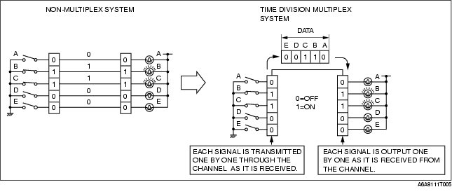

CAN SYSTEM OUTLINE
id094000000300
Time Division Multiplex
• For information exchange between electrical modules in a conventional system, a wire connection was necessary for each information signal. However, by sending the different signal at varying times over one channel, it is possible to send a large amount of information via a small harness.
• In the conventional, non-multiplex system, in order to control the illumination of the five bulbs, one switch and one channel was necessary for each bulb. For bulbs B and C to illuminate, switches B and C must be ON and electricity must flow through the channel. With the time multiplex system, this can be done through one channel. The channel is comprised of five data signal transmitters which transmit either a "0" or "1" signal to indicate whether a bulb turns ON or OFF. For example, to illuminate bulbs B and C, transmitters B and C transmit a "1" and transmitters A, D, and E transmit a "0". When the receiver receives these signal, bulbs B and C illuminate.
